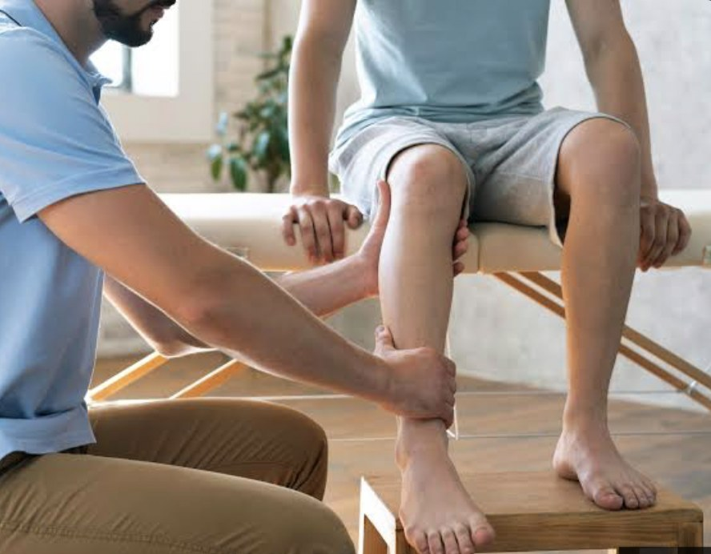
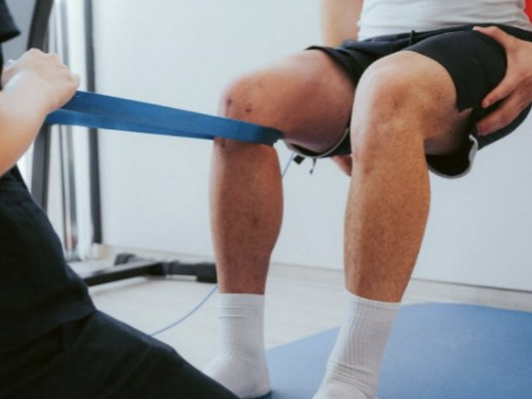
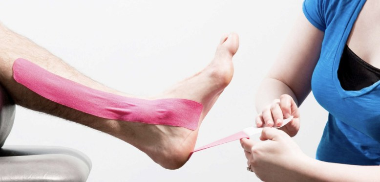
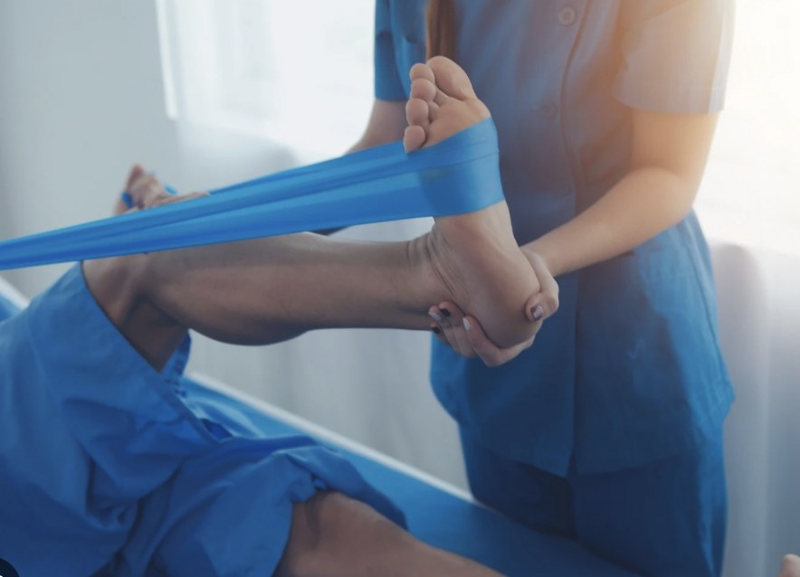

![Recuperación Activa]() Recuperación Activa
Recuperación Activa
Recuperación Activa
Recuperación Activa
Responde un cuestionario gratuito y recibe una orientación con ejercicios, consejos y progresión por fases. Online y presencial en Barcelona.



Eliges Fisio, Entreno o Adaptación y respondes unas preguntas.
Según tus respuestas, tu nivel y tu espacio de entreno.
Cada ejercicio con vídeo, consejos y opción de grabarte con la cámara.
Check-in diario, cargas anotadas y datos de tu reloj en Mi espacio.
Cuestionario inteligente y, si lo necesitas, videollamada o sesión presencial.

Se avanza de fase por criterios funcionales, no solo porque haya pasado un tiempo.
Un plan según tu nivel, tu espacio y tu deporte: running, pádel, fútbol, HYROX y más.
Sí. Lo rellenas desde tu móvil y recibes una orientación inicial personalizada.
No. La información de la web es educativa y orientativa. Si tienes una señal de alarma, acude a urgencias o llama al 112.
Ambas: sesiones presenciales en Barcelona y orientación online desde la web y la app.
Elige servicio, día y hora en Reservar. El pago se hace al confirmar la cita.
El vídeo de la cámara se analiza en tu dispositivo: no se graba ni se envía.
Haz el cuestionario gratis o escríbenos por WhatsApp.
Completa este breve cuestionario y recibe una orientación inicial con ejercicios, consejos y progresión por fases.
Empezar cuestionario ↓No verás ningún ejercicio hasta completar el cuestionario — es lo que nos permite orientarte bien.
¿Prefieres hablar directamente? Escríbenos por WhatsAppLa información de esta web es educativa y no sustituye una valoración sanitaria presencial. Si tienes una señal de alarma, acude a urgencias o llama al 112.
Haz el ejercicio frente a tu móvil, tablet o iPad y la web detecta tu movimiento (articulaciones y ángulos) para decirte si lo haces bien. Funciona desde el navegador, sin instalar nada.
Apoya el dispositivo, de lado y a 2–3 metros (para la mano, a 30–40 cm de la cámara).
En los dos primeros solo registramos tu gesto, sin corregir, para conocer tu forma habitual.
En el tercero calculamos la media de los tres y te damos una puntuación y qué ajustar.
Función en pruebas (beta). La precisión depende de la luz, la ropa, el encuadre y el ángulo del dispositivo, y todavía no está validada con personas reales. Úsala como orientación, no como corrección definitiva.
El vídeo se analiza en tu dispositivo, no se graba ni se envía. No sustituye a un fisioterapeuta.
Lumbar, cervical, hombro, rodilla... llevas semanas con molestias que van y vienen.
Tienes el alta médica pero no te sientes preparado para volver a entrenar.
Sin lesión previa, cansado de plantillas genéricas que no tienen en cuenta tu cuerpo.
PASO 1
Rellenas una prevaloración breve online: objetivo, zona, tiempo de evolución y disponibilidad.
PASO 2
Revisamos juntos tu caso y te explico el plan que propongo, sin tecnicismos.
PASO 3
Sesiones y ejercicios con revisión constante, ajustando según cómo evoluciones.
Valoración individual y tratamiento para dolor persistente, lesiones y molestias sin causa clara.
Saber más →Entrenamiento adaptado a tu cuerpo y tu objetivo, programado con criterio clínico.
Saber más →El puente entre el alta clínica y volver a tu deporte al 100%, con criterios objetivos.
Saber más →Ejemplos ilustrativos — se sustituyen por testimonios reales con consentimiento.
"Llevaba meses con molestias en la rodilla. Por fin entendí por qué pasaba y cómo volver a correr sin miedo."
"Pensaba que tenía que hacer reposo total. Me explicaron por qué moverme era parte del tratamiento."
"Nunca había entrenado con un plan pensado para mí y no una tabla genérica de internet."
Reserva tu primera valoración o escríbeme si prefieres resolver antes alguna duda.
Historia clínica, exploración de la zona y una explicación honesta de lo que creo que está pasando.
El plan sale de tu valoración, tu actividad y tus objetivos.
La terapia manual calma síntomas; el ejercicio dosificado sostiene la mejora.
Revisamos el progreso cada pocas sesiones y ajustamos según cómo respondas.
Esto es información educativa, no un diagnóstico. Si tienes dolor torácico intenso, pérdida de fuerza brusca, fiebre alta con dolor, pérdida de control de esfínteres o un traumatismo importante, acude a urgencias o llama al 112.
Selecciona tu sitio
Quieres entrenar sin lesionarte, con una progresión que respete tu punto de partida.
Ya tienes el alta de fisioterapia y quieres seguir progresando sin pasos en falso.
Una carrera, una prueba de trail, una oposición física.
Simplemente moverte mejor y sentirte más fuerte en el día a día.
Los tiempos son orientativos. Se avanza de fase por criterios cumplidos, no por fecha en el calendario.
Que el dolor y la inflamación dejen de mandar sobre lo que puedes hacer.
Recuperamos rango de movimiento y fuerza con ejercicio progresivo.
Movimientos parecidos a tu deporte, con más exigencia de coordinación.
El alta se basa en criterios objetivos, no solo en semanas transcurridas.
Esto es información educativa y no sustituye una valoración de fisioterapia. Ante señales de alarma, acude a urgencias o llama al 112.
Tres bloques que se renuevan solos cada 30 minutos.
No sustituye una valoración individual. Si tienes una condición médica, dolor persistente o dudas sobre tu caso concreto, consulta con un profesional o usa el cuestionario inicialo pregunta a Recuperación Activa.
EJERCICIO DEL DÍA
Solo novedades de fuentes científicas reconocidas — nada de blogs ni titulares sin respaldo.
Cuatro pasos que valen para casi cualquier deporte. Sube la intensidad poco a poco y termina con gestos parecidos a los de tu actividad.
Después de entrenar: baja el ritmo y estira con calma. Sirve para sentirte mejor y mantener la movilidad.
Elige tu deporte para ver en qué zonas poner el foco y abrir vídeos de calentamiento y estiramientos.
Vídeos de calentamiento y estiramientos que iremos revisando uno a uno.
Para profundizar. Son fuentes externas: este contenido es nuestro y no copia esos textos.
Filtra por deporte y tamaño del grupo.
Juegos y calentamientos para equipos y grupos grandes.
Soy [Nombre Apellido], graduado/a en Fisioterapia por [Universidad], con formación en [especialidad]. Colegiado/a nº [XXXXX].
Llevo [X] años trabajando con personas que quieren volver a moverse sin dolor o entrenar con más criterio. Con el tiempo entendí que lo que marca la diferencia es entender a la persona completa — su actividad, su historial, lo que le preocupa — y no solo la zona que le duele.
Combino fisioterapia y entrenamiento porque, en la práctica, casi nunca están separados: quien se recupera quiere volver a rendir, y quien entrena quiere hacerlo sin lesionarse.
Reservar primera valoraciónSi tu duda no está aquí, escríbeme por Instagram o por el formulario de contacto.
Cada pauta tiene detrás el criterio de guías clínicas de referencia. Aquí explico de dónde sale y qué tan sólida es la evidencia.
Mantenerse en movimiento y seguir con la actividad normal dentro de lo tolerable favorece la recuperación más que el reposo en cama.
El protocolo POLICE ha sustituido al clásico RICE porque la carga controlada y progresiva desde los primeros días acelera la recuperación funcional.
El tendón necesita carga mecánica progresiva y bien dosificada para regenerarse.
Estos son PDFs publicados directamente por el Col·legi de Fisioterapeutes de Catalunya (el colegio profesional oficial de Cataluña) y el Consejo General de Colegios de Fisioterapeutas de España. Enlazamos directamente a sus documentos originales — con sus propias fotos e ilustraciones — en vez de copiarlos, porque son autores con derechos sobre su material y esta es la forma correcta de darles crédito.
Infografía en PDF — Col·legi de Fisioterapeutes de Catalunya
Ejercicios de espaldaInfografía en PDF — Col·legi de Fisioterapeutes de Catalunya
Ejercicios de hombroInfografía en PDF — Col·legi de Fisioterapeutes de Catalunya
Ejercicios de rodillaInfografía en PDF — Col·legi de Fisioterapeutes de Catalunya
Ejercicios para mantenerse activo (adulto mayor)Infografía en PDF — Col·legi de Fisioterapeutes de Catalunya
Ejercicio en pacientes con cardiopatías (I)Infografía en PDF — Col·legi de Fisioterapeutes de Catalunya
Entrenamiento en casa — día 1Infografía en PDF — Col·legi de Fisioterapeutes de Catalunya
Más guías y manuales del Col·legiMarcha nórdica, fisioterapia acuática, cambios posturales y más
CUESTIONARIO INICIAL
Unas preguntas breves para orientarte sobre el siguiente paso. Esto no diagnostica nada: al final te decimos si es mejor que acudas a urgencias, que reserves una valoración, o si puedes empezar con una guía general que tu fisioterapeuta revisará antes de dártela como tuya.
📹 Corrector de técnica con cámara. En los ejercicios compatibles (sentadilla, zancada, puente, talones, plancha, hombro, codo, equilibrio…) o con el modo libre para cualquier otro movimiento de entreno, fisio, readaptación o Pilates puedes analizar tu movimiento con la cámara de tu móvil, tablet o iPad. Haz 3 intentos: en los dos primeros solo registramos y en el tercero te corregimos con la media. El vídeo no se graba ni se envía.
📹 Corrector de técnica con cámara. En los ejercicios compatibles (sentadilla, zancada, puente, talones, plancha, hombro, codo, equilibrio…) o con el modo libre para cualquier otro movimiento de entreno, fisio, readaptación o Pilates puedes analizar tu movimiento con la cámara de tu móvil, tablet o iPad. Haz 3 intentos: en los dos primeros solo registramos y en el tercero te corregimos con la media. El vídeo no se graba ni se envía.
Escríbenos por el canal que prefieras. No hace falta ningún dato para usar el cuestionario o el chat de dudas.
Si quieres llegar con el terreno ya andado, prueba primero el cuestionario inicial — no hace falta ningún dato para usarlo.
Toda la información de esta web es educativa. Busca atención médica urgente, sin esperar a una cita, si notas dolor torácico intenso, pérdida de fuerza o sensibilidad brusca, pérdida de control de esfínteres, fiebre alta con dolor, un traumatismo importante o deformidad tras una lesión. Acude a urgencias o llama al 112.